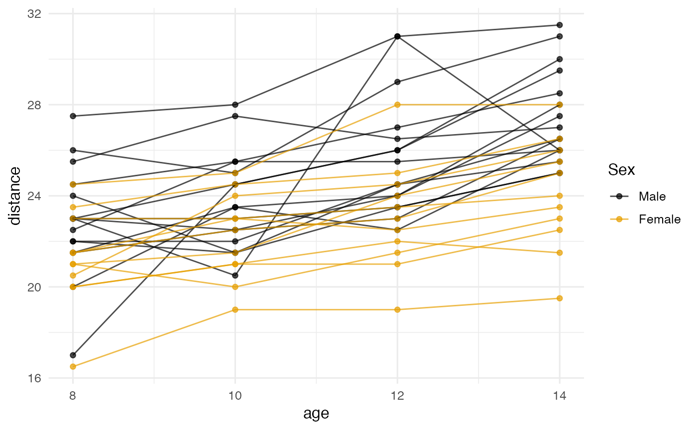

Visualize Observed Individual Trajectories in a Longitudinal Data Set
Source:R/plot_trajectories.R
plot_trajectories.RdPlots one trajectory per subject from a long-format data frame, optionally colored by a grouping variable, and optionally faceted into one panel per subject. Returns a ggplot2 object that can be further customized.
Usage
plot_trajectories(
data,
id,
time,
outcome,
group = NULL,
ids = NULL,
n_random = NULL,
pct_random = NULL,
facet = FALSE,
nrow = NULL,
ncol = NULL,
show_points = TRUE,
point_size = 1.5,
linewidth = 0.5,
alpha = 0.7,
palette = "okabe_ito",
title = NULL,
xlab = NULL,
ylab = NULL,
seed = NULL
)Arguments
- data
A long-format
data.frame(one row per subject-occasion).- id
Character. Column name in
dataidentifying the subject.- time
Character. Column name for the time / occasion variable (the x axis).
- outcome
Character. Column name for the outcome / score variable (the y axis).
- group
Optional character. Column name for a grouping variable used to color the trajectories (and panels, if faceted).
- ids
Optional vector of subject IDs to plot.
- n_random
Optional integer; randomly sample this many subjects.
- pct_random
Optional numeric; sample this percentage of subjects. Values \(\leq 1\) are interpreted as proportions; values \(> 1\) as percentages. At most one of
ids,n_random, orpct_randommay be supplied.- facet
Logical. If
TRUE, draw one panel per subject viafacet_wrap. IfFALSE(default), overlay all trajectories in one panel.- nrow, ncol
Optional integers passed to
facet_wrap()whenfacet = TRUE.- show_points
Logical. If
TRUE(default), draw the observed points as well as the connecting lines.- point_size
Size of the observed points (default
1.5).- linewidth
Line width for the connecting segments (default
0.5).- alpha
Transparency for points and lines (default
0.7).- palette
Character string naming the color palette used to color the trajectories when
groupis a discrete (factor, character, or logical) variable. Defaults to"okabe_ito", base R's colorblind-safe Okabe-Ito palette;"tableau"is also available. Ignored whengroupisNULLor numeric.- title, xlab, ylab
Optional plot labels. Sensible defaults are taken from
outcomeandtimewhen these areNULL.- seed
Optional integer random seed used when
n_randomorpct_randomis supplied. Defaults toNULL, which leaves the user's current RNG state intact; supply an integer for reproducible subject sampling.
Details
The function modernizes the original vit() (visualize individual
trajectories) function by returning a single ggplot2 object instead
of producing graphical side effects. Saving is handled by the user via
ggsave; multi-page output via faceting and
facet_wrap's nrow/ncol.
See also
plot_trajectories_fitted for plotting observed
trajectories together with a fitted multilevel model's predictions.
Other plotting:
plot_R2(),
plot_cfa_k(),
plot_ci(),
plot_equivalence(),
plot_forest(),
plot_irt_information(),
plot_mediation_mbco(),
plot_randomization_test(),
plot_regions_of_significance(),
plot_smd(),
plot_trajectories_fitted(),
power_equivalence_md_plot()
Author
Ken Kelley kkelley@nd.edu
Examples
# Built-in Orthodont data: 27 children, 4 measurements each.
d <- nlme::Orthodont
# Overlay all trajectories, colored by sex.
plot_trajectories(d, id = "Subject", time = "age",
outcome = "distance", group = "Sex")

# One panel per child, for twelve children drawn at random. Not run
# here because faceting draws twelve small plots instead of one, which
# costs about twice what the overlay above does. The call is:
# plot_trajectories(d, id = "Subject", time = "age",
# outcome = "distance",
# n_random = 12, facet = TRUE, ncol = 4,
# seed = 113)